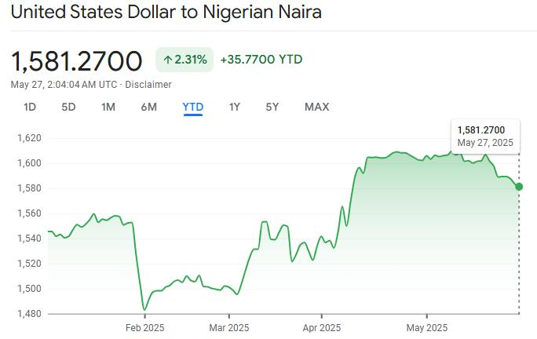

Naira Remains Relatively Stable Against the Dollar as Exchange Rate Holds Around ₦1,362/$
Posted on 10th August, 2026.
The Nigerian naira opened the new trading week relatively stable against the United States dollar, with the currency maintaining a narrow trading range in both the official and parallel foreign exchange markets.
As of Monday, August 10, 2026, the naira was trading at about ₦1,362.55 to the US dollar in the official Nigerian Foreign Exchange Market (NFEM). In the parallel market, the dollar was quoted at approximately ₦1,410 for buying and ₦1,425 for selling.

Naira Holds Steady in Official Market
The latest figures indicate that the naira has continued to show short-term stability after trading around the ₦1,360–₦1,364 range in recent sessions.
According to market reports citing data from the Central Bank of Nigeria's exchange-rate portal, the ₦1,362.55/$ NFEM rate remains the benchmark for transactions conducted through authorised dealers in the formal foreign exchange market.
The relatively narrow movement has provided some stability for businesses and individuals who need to plan transactions involving foreign currencies.
Dollar Trades Around ₦1,425 in Parallel Market
The parallel market has also recorded relatively limited movement.
On Monday, August 10, dollar dealers were reported to be buying the currency at approximately ₦1,415 and selling at around ₦1,425. The rates were described as largely unchanged from recent trading sessions.
Based on the official rate of ₦1,362.55 and the parallel-market selling rate of ₦1,425, the difference between the two rates was approximately ₦62 per dollar.
What Is Supporting the Naira's Stability?
Several factors are being closely watched by participants in Nigeria's foreign exchange market.
One important factor is the availability of foreign exchange liquidity. Recent reports indicate that continued foreign-exchange supply and interventions are helping to ease some demand pressures in the market.
Other factors that can influence the naira include:
- Foreign exchange liquidity
- Crude oil export earnings
- Nigeria's external reserves
- Foreign investment inflows
- Diaspora remittances
- Monetary policy decisions
- Demand from importers and businesses
- Global movements in the US dollar
These factors will continue to determine whether the current period of relative stability can be sustained.
Impact on Businesses and Nigerians
A relatively stable exchange rate can make it easier for businesses to prepare budgets and estimate the cost of international transactions.
Importers, manufacturers, technology companies and other businesses that rely on foreign goods and services can benefit from reduced short-term exchange-rate uncertainty. Businesses with dollar-denominated obligations can also have greater visibility when planning payments.
However, the difference between official and parallel-market rates remains important. The actual rate available to an individual or business can vary depending on the bank, Bureau de Change operator, transaction size, location and payment method.
For Nigerians paying international school fees, travelling abroad, purchasing goods from overseas or settling other dollar-denominated obligations, movements in the naira-dollar exchange rate can have a direct effect on their expenses.
Outlook for the Naira
The outlook for the naira remains dependent on developments in the foreign exchange market and the wider Nigerian economy.
Market participants will continue to monitor dollar supply, crude oil receipts, investor confidence, remittances and monetary policy. Continued improvement in foreign-exchange liquidity could support further stability, while strong dollar demand could put renewed pressure on the naira.
For now, the latest market figures point to a period of relative stability rather than a major movement in either direction.
Latest Dollar-to-Naira Rates — August 10, 2026
| Market | Buying Rate | Selling Rate |
|---|---|---|
| Official NFEM | — | ₦1,362.55/$ |
| parallel Market | ₦1,410/$ | ₦1,425/$ |
Rates can change during the day and may differ between financial institutions, Bureau de Change operators and locations.
Conclusion
The Nigerian naira has started the week on a relatively stable note against the US dollar, with the official exchange rate around ₦1,362.55/$ and the parallel-market selling rate around ₦1,425/$.
While the stability offers some relief to businesses and consumers dealing with foreign currency, the market remains sensitive to dollar supply, oil revenues, foreign investment, remittances and monetary policy. Nigerians and businesses should therefore continue to monitor exchange-rate movements before making major foreign-currency transactions.